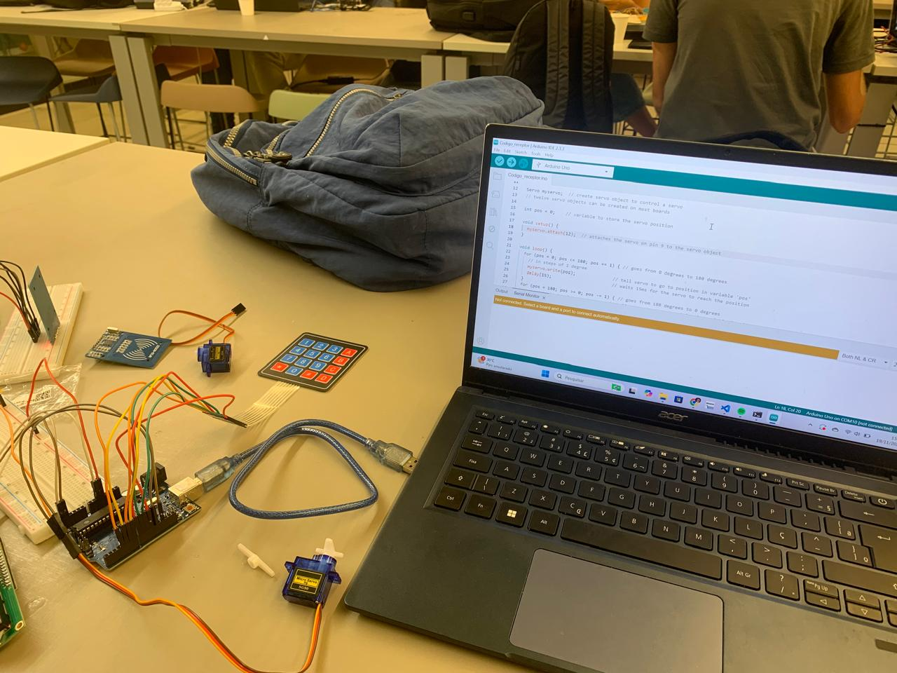
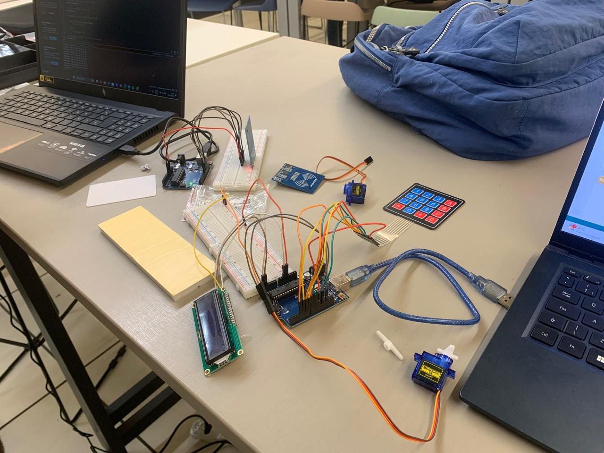
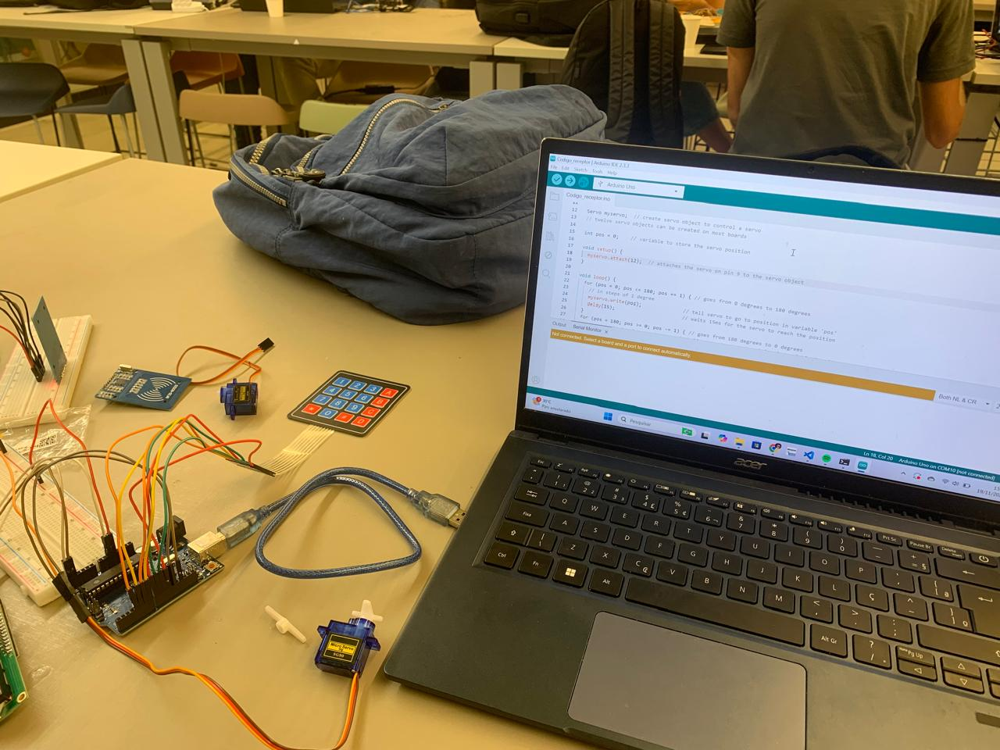
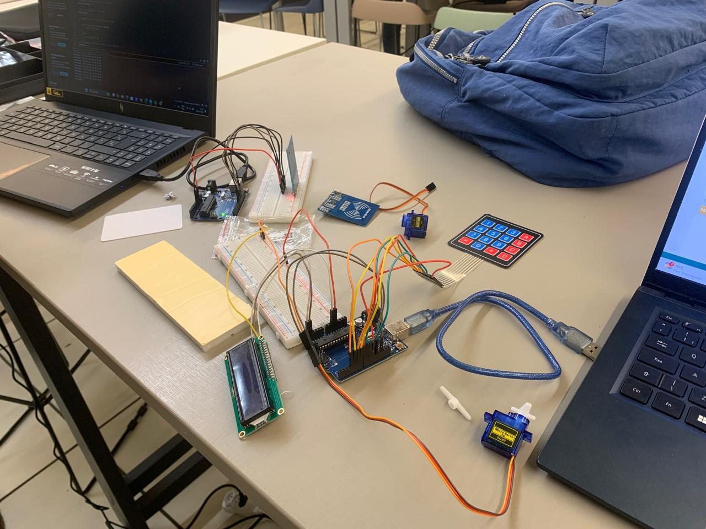

Projeto 1
O projeto consiste em proporcionar a interação entre crianças e tecnologia a partir de um dispositivo que simula uma caça ao tesouro ambientada no recife antigo de modo a fornecer conteúdo cultural para crianças a partir da tecnologia.
O projeto utiliza Arduíno para proporcionar o encontro dos objetos escondidos pelo Recife Antigo
 


